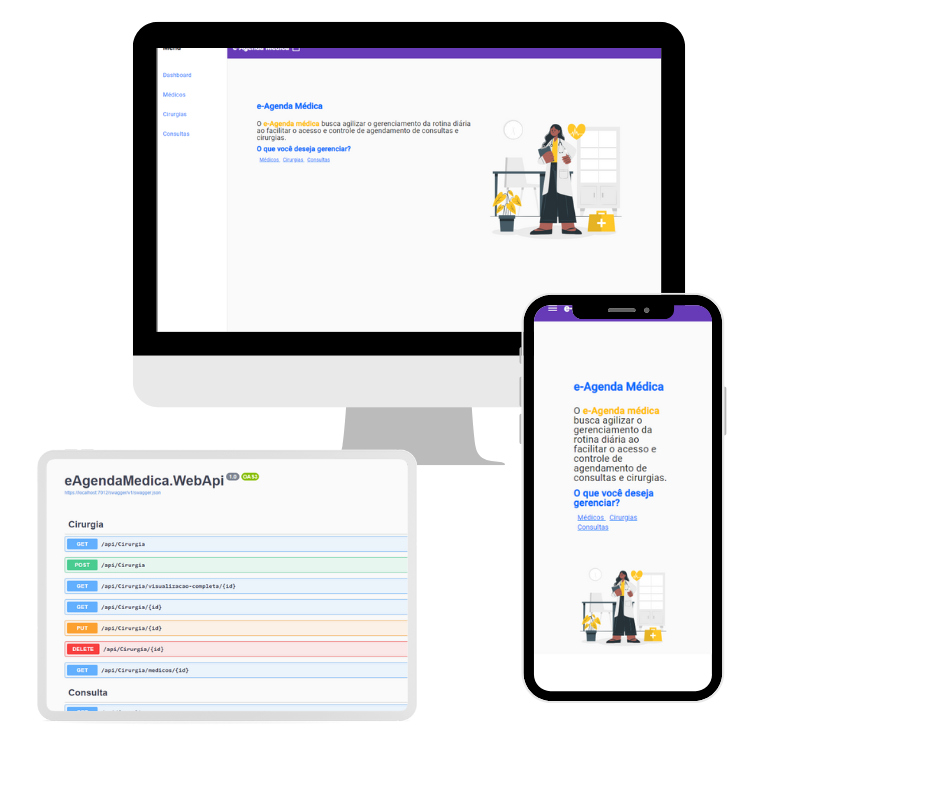
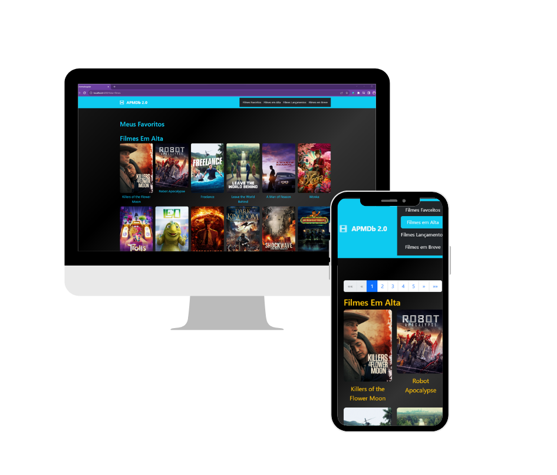
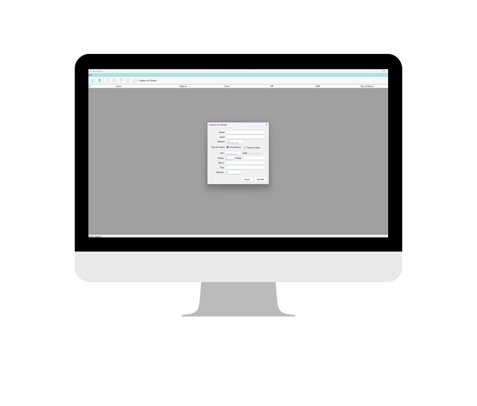

Projetos

e-Agenda Médica
Projeto criado com o intuito de suprir as dificuldades de uma rotina de atendimentos médicos, onde é possivel agendar de forma simples consultas e cirurgias e visualiza-las facilmente além de impedor que os compromissos sejam agendados nos mesmos horários sem conflito de agenda .
Ver Projeto
APMDB Cinema 2.0
Utilizando a API do TMDB criei um site que mostra os lançamentos em filmes, pode assistir os trailers e conferir sinopeses, além de ser possivel favorita-los .
Ver Projeto
Locadora de Veículos
Projeto feito em linguagem C# com o objetivo de simular o cotidiano de uma locadora de veículos onde permitimos cadastrar veículos e seus condutores. As instefaces de interação do usuario foram feitas em windows forms .NET idealizados para que o usuário consiga utilizar o sistema de forma intuitiva e clara
Ver Projeto